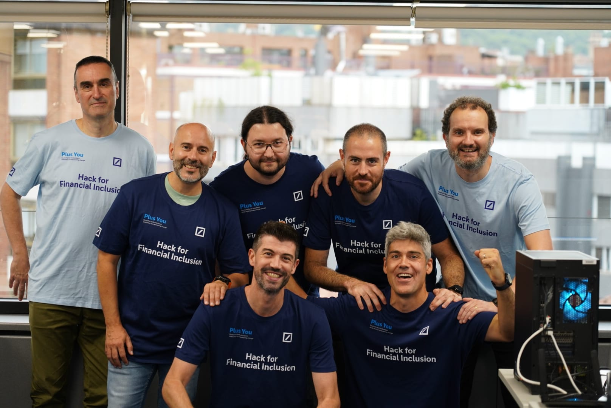

Conoce a tu Guía
Alberto Martínez Zurita
Transmitiendo pasión y momentum por la IA
- Ingeniero Superior en Informática.
- Más de 20 años de experiencia profesional.
- Más de 15 años como arquitecto informático.
- Programa de Formación IA Generativa de Google completado.
- Ponente del programa Ágora desde sus inicios.
- Especial interés y motivación en la Inteligencia Artificial, abarcando desde el conocimiento profundo hasta la ética y el impacto social.
- Participación en la Hackathon para la Inclusión Financiera.
